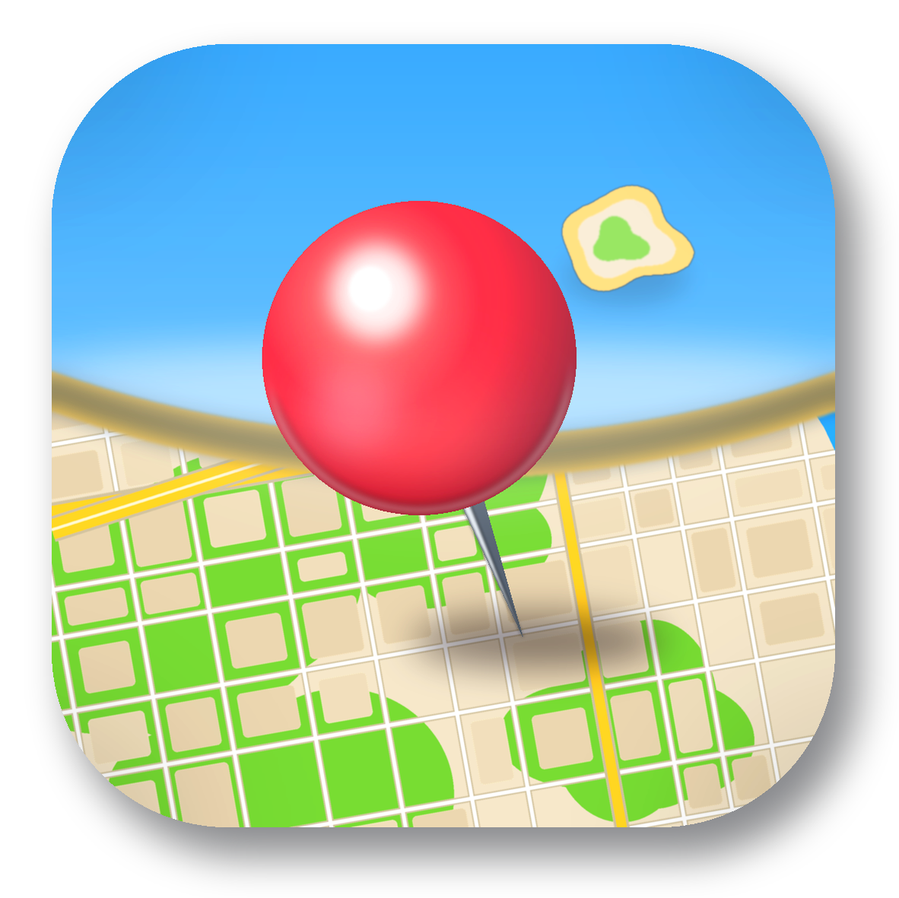
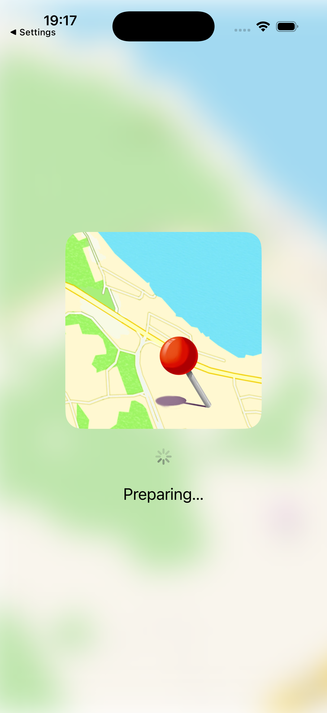
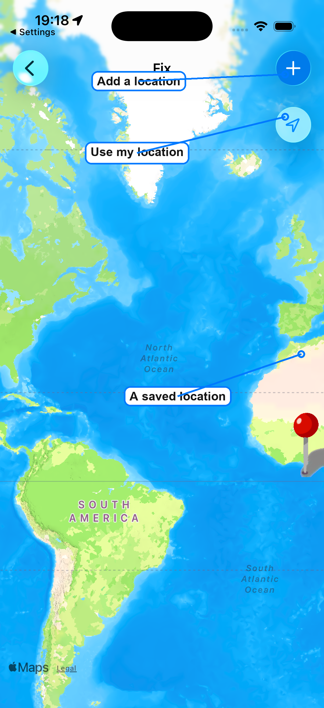

Location Fix User Manual
Objective
Location Fix is a simple way to keep track of all the places that matter to you — a favourite trailhead, where you parked, a restaurant a friend recommended — and to share them with other people. Drop a pin on the map, add a photo and a few notes, organise your places by subject, and route to any of them with a tap. Everything syncs across your devices with iCloud.

What Location Fix can do
Drop a pin anywhere on the map to store a favourite location.
Add rich detail to any location — name, address, photo, notes, subject (group) and a pin colour.
Organise your locations by subject so related places stay together.
Route to any location using Apple Maps, Google Maps or Waze.
Share a location — with its details — with other people and other apps.
Save locations sent from other apps, including a geotagged photo.
Keep everything in sync across your iPhone and iPad with iCloud.
Quick start — save your first location
There are two ways to add a location. Touch and hold anywhere on the map to drop a pin at that point, or tap the + button in the top corner to save your current location. Either way, the Add a Fix screen opens so you can fill in the details.
Give the location a name, choose or create a Group to file it under, pick a pin colour, and add any notes. You can attach a photo from your camera or photo library. The address is filled in for you from the coordinates. Tap Save and the pin appears on your map.
Finding your locations
Map

The map shows a coloured pin for each saved location. Tap a pin to see its name and photo, and tap the info button to open its full details. Pinch and drag to move around; only the pins in view are drawn, so the map stays responsive even with many locations.
List
The list groups your locations by Group (subject). Use the search field at the top to filter by name, address, notes or group. Selecting a location in the list centres the map on it. Swipe a row to delete a location.
Working with a location
Open a location to see its map, photo, coordinates, notes and group. Three actions sit at the top of the details:
Update — move the location to your current position.
Share — send the location to other people or apps (see below).
Route — open turn-by-turn directions in your preferred maps app.
You can change the photo, rename the location, edit its notes and pin colour, and change its group at any time. Your preferred routing app (Apple Maps, Google Maps or Waze) is remembered for the Route button.
Sharing a location
Tap Share to send a location through the system share sheet. Location Fix tailors what each destination receives so the location arrives in a form that app understands:
Messages — a shareable Location Fix link plus a contact card (vCard) with the address and coordinates.
WhatsApp — a Location Fix link plus a Google Maps link.
Apple Maps, Google Maps and Waze — open the location directly in that maps app.
Tesla and Rivian — send the address to your car so you can navigate to it.
Mail, Copy, AirDrop and others — a link to the location.
Tip: When you share to another Location Fix user, they get a link that opens the place — complete with its photo — straight into their own collection.
Opening a location someone shared with you
Tap a Location Fix link that someone sent you and the app opens a preview of the place — its name, map and photo. Confirm to save it into your own locations.
Saving locations from other apps
Location Fix can capture places from elsewhere on your device using the Save in Fix share extension. From Apple Maps, Google Maps or a maps link in Safari, tap Share and choose Save in Fix — the name, address and coordinates come across automatically. You can also share a photo: if the picture was taken with location turned on, Location Fix reads the coordinates from it and uses the photo as the location's image.
Note: Photos only carry a location if Location was on when the picture was taken. If a shared photo has no location, Location Fix lets you type the coordinates in before saving.
Syncing across your devices
As long as you are signed in to iCloud, your locations sync automatically between your iPhone and iPad. Add a place on one device and it appears on the others a short time later. No account to create and nothing to back up by hand.
Support
Have a question, found a problem, or want to suggest a feature? We would love to hear from you — email us.
Frequently asked questions
A location I shared didn’t include its photo. Photos travel with shared Location Fix links and are restored when the other person saves the place. Some other apps and channels only carry the address or a map link, not the picture.
My car (Tesla / Rivian) isn’t offered when I share. The car app must be installed and signed in on the device. When it appears in the share sheet, Location Fix sends it the address to navigate to.
A place I saved from Maps didn’t appear. Open Location Fix once after saving from the other app so it can take in the new location; it then syncs to your other devices.
My locations aren’t syncing between devices. Make sure each device is signed in to the same iCloud account with iCloud Drive turned on, and is connected to the internet.
See also our Privacy Policy.